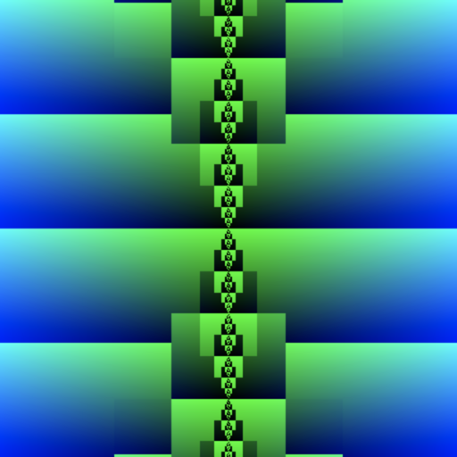

If all you see in the above left image is a dull black stripe on a blue background, then WebGL fragment shader compiler decided that following two functions are identical:
vec2 sum(float a, float b) {
float s = a + b;
float e = (b - (s-a)) + (a - (s-b));
return vec2(s, e);
}
↔
vec2 sum(float a, float b) {
return vec2(a + b, 0.0);
}
which is clearly not the case, when non-overlapping floats are added together (for example 1.0 and pow(2,-24)).
Image on the right is an attempt to workaround the limitations by using uniform that shader compilers can not optimize away, see this explanation from luma.gl.
When compiler does not assume rounding errors to be zero, resulting picture looks as follows:
